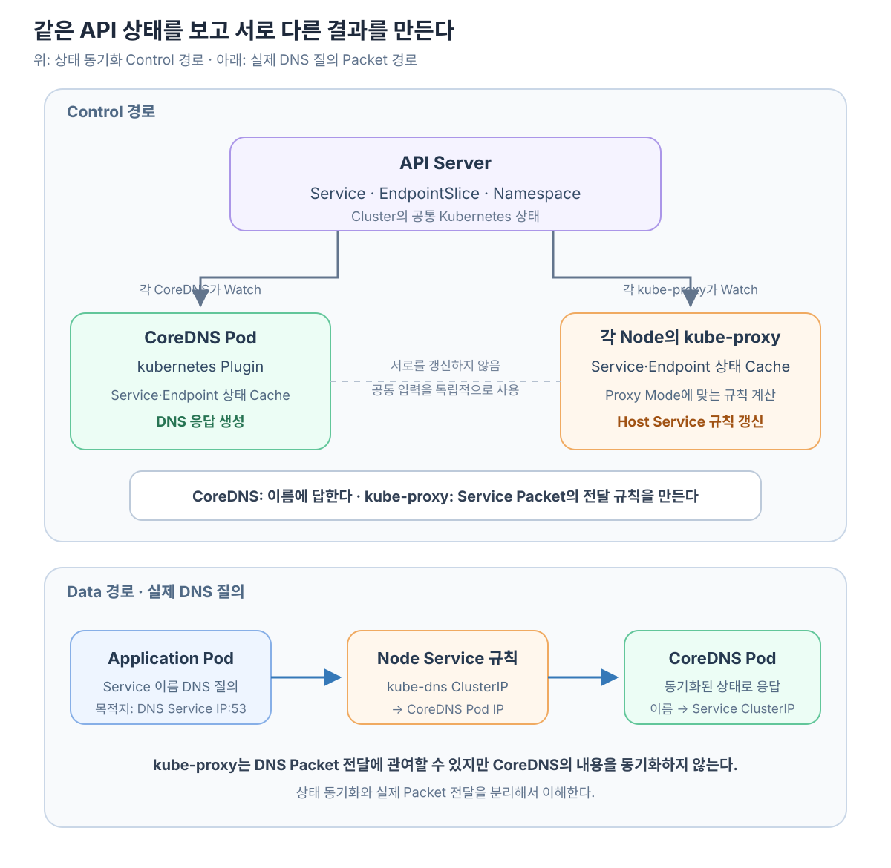

CoreDNS와 kube-proxy는 모두 API Server에 저장된 Service와 EndpointSlice를 관찰할 수 있다. 그렇다고 두 구성요소가 같은 일을 하거나 서로를 갱신하는 것은 아니다.
CoreDNS는 DNS 이름에 무엇으로 응답할지를 준비하고, kube-proxy는 Service IP로 들어온 Packet을 어떤 Endpoint로 연결할지를 자기 Node의 전달 상태에 반영한다.

이 글은 veth 기반 Pod Network와 kube-proxy의 iptables Mode를 기준으로 이 두 결과가 실제 요청에서 어떻게 이어지는지 살펴본다.
EndpointSlice는 Service가 사용할 Network Endpoint를 표현한다
EndpointSlice에는 Service와 연결된 Endpoint의 주소, Port와 준비 상태 등이 표현된다.
Service
이름: model-server
ClusterIP: 10.96.10.20
Port: 8000
EndpointSlice
Service: model-server
Endpoint:
IP: 10.244.2.7
Port: 8000
Ready: true
Node: node-b
Service Object가 안정적인 가상 주소를 표현한다면 EndpointSlice는 현재 그 Service 뒤에서 요청을 받을 수 있는 Network Endpoint를 표현한다.
Service
“사용자는 10.96.10.20:8000으로 접근한다.”
EndpointSlice
“실제 Backend 후보에는 10.244.2.7:8000이 있다.”
CoreDNS와 kube-proxy는 이 상태를 서로 다른 목적으로 해석한다.
CoreDNS는 DNS 응답에 필요한 상태를 만든다
CoreDNS Process 안의 kubernetes Plugin은 API Server를 통해 Service와 EndpointSlice 등을 관찰한다. 이 정보는 DNS 요청에 답하기 위한 내부 Cache와 Index에 반영된다.
그러나 일반적인 ClusterIP Service를 조회할 때 CoreDNS가 EndpointSlice에서 Pod 하나를 선택해 반환하는 것은 아니다. Service Object의 ClusterIP를 응답한다.
DNS 질의
model-server.default.svc.cluster.local
↓
CoreDNS
↓ Service Object의 ClusterIP
10.96.10.20
이때 EndpointSlice의 10.244.2.7은 일반 Service DNS 응답의 직접 결과가 아니다. 실제 Backend 선택은 나중에 Service Packet이 Node의 전달 규칙을 만났을 때 이루어진다.
반면 Headless Service에는 ClusterIP가 없다. 이 경우 CoreDNS가 EndpointSlice의 주소를 사용해 실제 Backend IP들을 DNS 응답으로 제공할 수 있다.
Headless Service DNS 질의
model-server.default.svc.cluster.local
↓
CoreDNS
↓ EndpointSlice 주소
10.244.1.5
10.244.2.7
CoreDNS가 일반 Service에는 ClusterIP를 응답하면서도 Headless Service·Endpoint별 이름·SRV Record를 위해 EndpointSlice를 계속 관찰하는 이유는 CoreDNS는 왜 Service뿐 아니라 EndpointSlice도 관찰할까?에서 자세히 살펴본다.
따라서 CoreDNS가 EndpointSlice를 본다는 말은 “각 Pod의 Network 설정을 갱신한다”는 뜻이 아니다. DNS 질의에 어떤 주소를 응답할지 판단하는 데 Endpoint 정보를 사용할 수 있다는 뜻이다.
CoreDNS는 각 Pod 안에 DNS 정보를 밀어 넣지 않는다
Pod 안에는 kubelet이 준비한 DNS Client 설정이 있다.
/etc/resolv.conf
nameserver 10.96.0.10
search default.svc.cluster.local svc.cluster.local cluster.local
nameserver에는 보통 CoreDNS 앞의 kube-dns Service ClusterIP가 들어간다. Pod는 이 주소로 DNS 질의를 보낸다.
CoreDNS가 Service 생성 때마다 모든 Pod의 /etc/resolv.conf나 로컬 DNS Record를 수정하는 것은 아니다.
Pod에 미리 준비되는 것
DNS Server 주소
Search Domain
질의 시 CoreDNS가 응답하는 것
현재 Service·Endpoint 상태에 맞는 IP
즉 CoreDNS는 Pod Network를 구성하는 CNI Plugin도 아니고, Pod 내부 설정을 지속적으로 수정하는 Agent도 아니다. Kubernetes 객체를 바탕으로 Cluster DNS 응답을 제공한다.
CoreDNS의 API Watch와 DNS 응답 갱신 자체는 CoreDNS는 Service 정보를 어떻게 알아내고 DNS 응답을 갱신할까?에서 자세히 살펴본다.
kube-proxy는 Endpoint 후보를 Host의 Service 전달 상태에 반영한다
각 Node의 kube-proxy도 API Server를 통해 Service와 EndpointSlice를 관찰한다.
iptables Mode에서는 다음 두 정보를 조합해 자기 Node의 Host Network Namespace에 Service 규칙을 구성한다.
Service에서 얻는 정보
ClusterIP: 10.96.10.20
Port: 8000
EndpointSlice에서 얻는 정보
Endpoint 후보: 10.244.2.7:8000
Ready 상태
규칙의 의미를 단순화하면 다음과 같다.
목적지가 10.96.10.20:8000인가?
→ 사용 가능한 Endpoint 중 하나 선택
→ 10.244.2.7:8000이 선택되면 DNAT
kube-proxy가 매 Packet을 직접 받아 Endpoint를 선택하는 것은 아니다. kube-proxy가 Kernel이 사용할 규칙을 미리 준비하고, 실제 Packet이 도착하면 Netfilter가 그 규칙을 적용한다.
kube-proxy
Service·EndpointSlice 변화 관찰
→ 규칙 계산과 갱신
Linux Kernel
실제 Packet 수신
→ 준비된 규칙 적용
Pod가 보낸 Service Packet은 Host Network에서 규칙을 만난다
일반적인 veth 기반 Pod Network에서 Application이 Service ClusterIP로 Packet을 보내면 Pod의 Routing Table이 출력 Interface를 선택한다.
Pod Application
목적지: 10.96.10.20:8000
↓
Pod Routing Table 조회
↓
Pod eth0에서 TX
↓ veth pair
Host 쪽 veth에서 RX
Host Network Namespace로 들어온 Packet은 Netfilter 처리 경로를 지난다. Pod에서 veth를 통해 들어온 Packet이라면 PREROUTING에서 Service 규칙을 만날 수 있다.
Host veth에서 Packet 수신
→ Netfilter PREROUTING
→ kube-proxy가 준비한 Service 규칙과 일치
→ Endpoint 10.244.2.7:8000 선택
→ DNAT
이때 바뀌는 것은 목적지 주소다.
변경 전
목적지: 10.96.10.20:8000
↓ DNAT
변경 후
목적지: 10.244.2.7:8000
그다음 Host Kernel은 변경된 Pod IP를 기준으로 Route를 판단한다. 같은 Node의 Pod라면 로컬 Datapath로, 다른 Node의 Pod라면 CNI가 준비한 Route나 Tunnel로 전달한다.

DNS 질의 Packet도 같은 Service 전달 구조를 사용할 수 있다
CoreDNS 자체도 보통 kube-dns라는 Service 뒤에서 여러 Pod로 실행된다.
Application Pod가 DNS 질의를 보낼 때 목적지는 /etc/resolv.conf에 기록된 DNS Service IP다.
Application Pod
→ kube-dns Service IP:53
→ veth pair
→ 출발 Node의 Host Network
→ DNS Service 규칙
→ CoreDNS Pod IP:53
따라서 kube-proxy가 준비한 규칙이 DNS Packet을 CoreDNS Pod까지 전달하는 데 사용될 수 있다.
그러나 이것은 실제 DNS Packet의 Data 경로다. CoreDNS가 Service 정보를 알아내는 Control 경로와는 다르다.
Control 경로
CoreDNS kubernetes Plugin
→ API Server의 Service·EndpointSlice Watch
→ DNS 응답 상태 갱신
Data 경로
Application의 DNS Packet
→ kube-dns Service IP
→ Node의 Service 규칙
→ CoreDNS Pod
kube-proxy는 DNS Packet 전달에는 관여할 수 있지만 CoreDNS 내부의 Service 정보를 동기화하지 않는다.
DNS 조회와 실제 Service 요청은 별도의 두 통신이다
Application이 model-server라는 이름으로 요청을 시작하면 먼저 DNS 통신이 일어난다.
첫 번째 통신: DNS 질의
Application Pod
→ kube-dns Service IP:53
→ CoreDNS Pod
← 10.96.10.20
DNS 응답을 받은 뒤 Application은 Service ClusterIP로 별도의 연결을 시작한다.
두 번째 통신: 실제 Service 요청
Application Pod
→ 10.96.10.20:8000
→ 출발 Node의 Service 규칙
→ Endpoint 10.244.2.7:8000
→ CNI Network 경로
→ 대상 Pod
CoreDNS는 두 번째 통신의 중간에서 Application Packet을 중계하지 않는다.
같은 EndpointSlice에서 서로 다른 결과가 만들어진다
전체 관계를 합치면 다음과 같다.
API Server의 Service·EndpointSlice
│
├→ CoreDNS kubernetes Plugin
│ → DNS 응답 상태
│
└→ 각 Node의 kube-proxy
→ Host의 Service 전달 규칙
그리고 실제 요청에서는 두 결과가 순서대로 사용될 수 있다.
Service 이름
↓ CoreDNS가 응답
Service ClusterIP
↓ kube-proxy가 준비한 Host 규칙
Endpoint Pod IP
↓ CNI Network 경로
대상 Node와 Pod
따라서 다음처럼 정리할 수 있다.
CoreDNS는 EndpointSlice를 DNS 응답에 필요한 Endpoint 정보로 사용하고, kube-proxy는 EndpointSlice를 Service가 선택할 Backend 후보로 사용한다. 일반적인 veth·iptables 구성에서 Pod의 Service Packet은 veth를 통해 Host Network로 나온 뒤 kube-proxy가 준비한 Netfilter 규칙을 만나 Endpoint Pod IP로 변환된다.
이 역할들이 실제 요청 한 번에서 어떤 순서로 이어지는지는 Pod가 Service 도메인으로 보낸 요청은 어떻게 다른 Node의 Pod에 도착할까?에서 도메인 해석부터 원격 Pod의 eth0까지 Packet 하나를 따라가며 살펴본다.
Cilium 같은 eBPF 기반 Service 구현이나 veth를 사용하지 않는 CNI에서는 Packet을 가로채는 위치와 Datapath가 달라질 수 있다. 여기서 중요한 공통점은 구현 방식이 아니라 DNS 응답 상태와 Service 전달 상태가 서로 다른 Control Plane 결과라는 점이다.